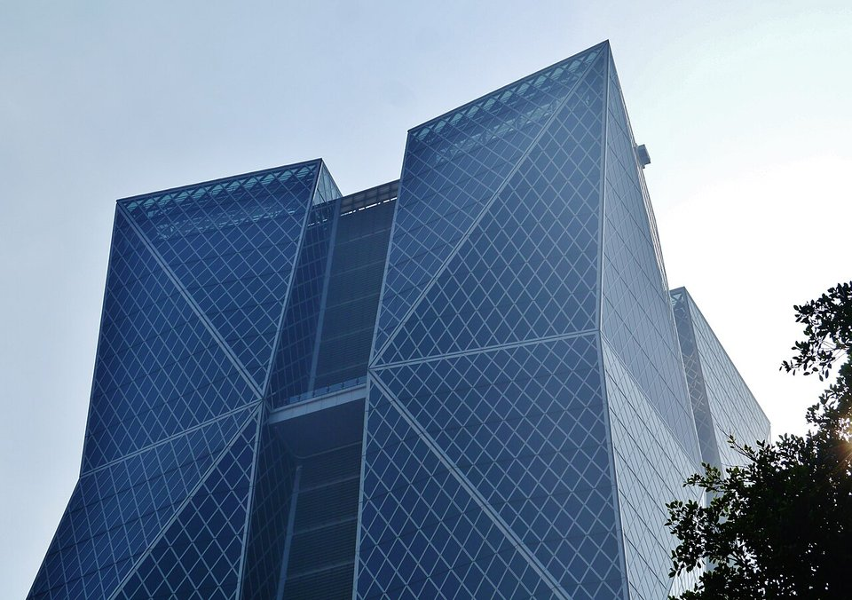
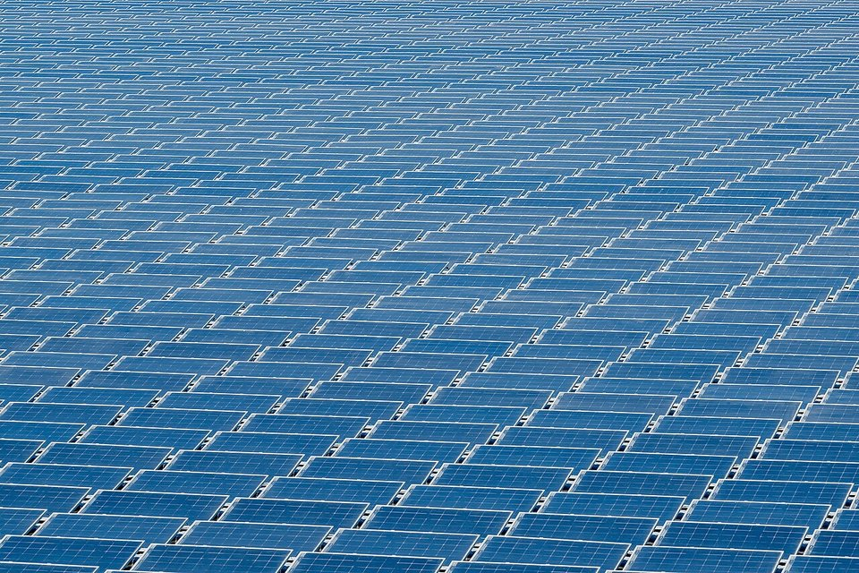
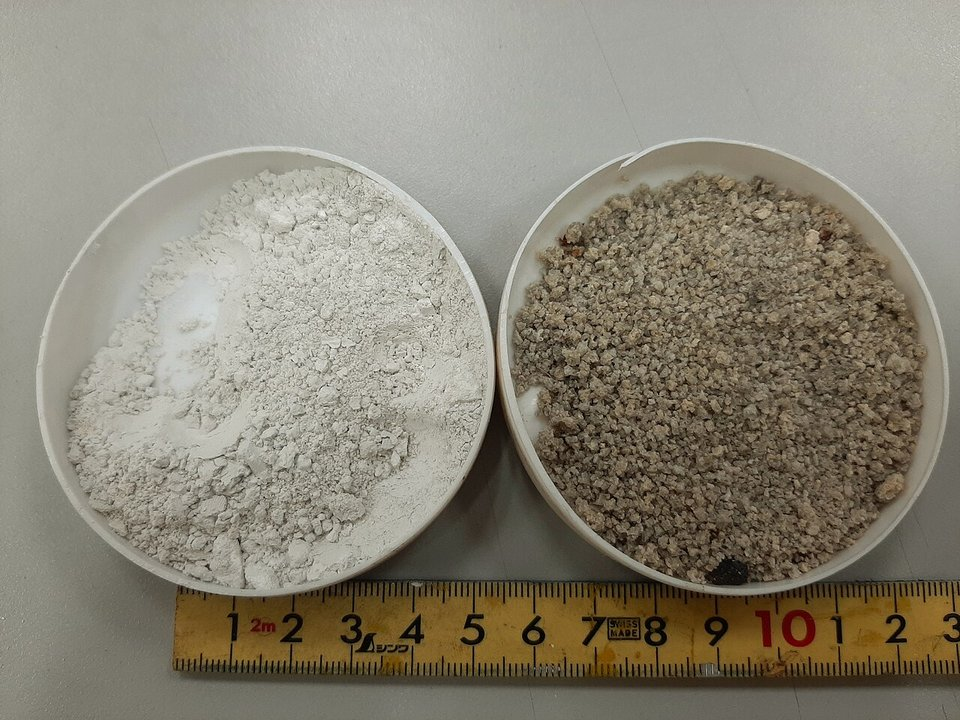

CHINA STEEL · SUSTAINABILITY REPORT · 2024
中鋼 2024 永續報告書導讀：減碳進度、綠能與循環的成績單
鋼鐵潮流工作室 · 發布 2026.10.06

本期重點
中鋼 2024 年（民國 113 年）永續報告書於 2025 年 6 月發行。這一年鋼市仍在景氣谷底，合併營收 3,605 億元、稅後淨利 38.76 億元，獲利比前一年略為回升。報告的主軸是「二軸三轉」：高值化精緻鋼廠、發展綠能產業兩軸，加上供應鏈、數位、低碳三項轉型。溫室氣體減碳行動累計減量達基準年的 6.86%，接近 2025 年減 7% 的目標；2030 年要減 25%，2050 年以碳中和為努力目標。
- 減碳：2024 年完成 173 件減碳行動方案，自 2018 年以來累計 1,281 件，年減碳量 151.57 萬噸。
- 但總排放微增：鋼胚產量增加 1.8%，範疇一加二排放增加 3.8%，每噸鋼胚排放回到約 2.37 噸。
- 綠能：集團屋頂光電累計 100.6 MW，綠能事業年發電 4.36 億度；中鋼本身的再生能源占總能源使用仍只有 0.067%。
- 循環：廢棄物資源化率 94.8%，製程用水回收率 98.5%，持續零固化掩埋。
- 安全：員工無死亡事故，但協力廠商在 2024 年 11、12 月發生 2 起死亡事故。
報告書基本資料
| 報告期間 | 2024 年 1 月 1 日至 12 月 31 日（民國 113 年） |
|---|---|
| 發行 | 2025 年 6 月；經董事會決議通過，共 151 頁 |
| 揭露範疇 | 中鋼公司本身（總公司、石料處理廠等據點），不含子公司；財務數字與合併財報一致 |
| 編製準則 | GRI 準則 2021、證交所永續報告書作業辦法，並對照 SASB 鋼鐵業指標、TCFD |
| 外部確信 | BSI 英國標準協會依 AA1000 保證標準查證；溫室氣體盤查為合理保證等級 |
| 原文下載 | 中鋼 ESG 專區（PDF） |
關鍵數字
一、經營者的話：二軸三轉
董事長黃建智與總經理陳守道在開頭指出，全球鋼鐵業連續三年需求下滑，同時面對地緣競爭、碳定價、碳關稅與碳中和等挑戰。中鋼的回應是「二軸三轉」：
- 高值化精緻鋼廠。 聚焦八大精緻鋼品，2024 年銷量占總鋼品銷量 11.1%（目標 9.5%），毛利占比超過 75%。
- 發展綠能產業。 拓展太陽光電與離岸風電，2024 年綠能發電量 4.36 億度、減碳潛力 18.5 萬噸。
- 三項轉型。 供應鏈轉型（早期供應商參與，從追求性價比轉為追求價值）、數位轉型（遠端操控、數位雙生、缺陷感測）、低碳轉型（減碳路徑、碳盤查與碳權管理、減量獎勵）。
二、氣候變遷：目標、成績與路徑
中鋼以 2018 年（民國 107 年）為減碳基準年，範疇一加二排放約 2,210 萬噸 CO₂e。短期策略以「增加再生能源」與「提升能源效率」為主，2018 至 2024 年共完成 1,281 件減碳行動方案，年減碳量 151.57 萬噸，相當於基準年的 6.86%。
- 2018基準年，約 2,210 萬噸
- 2021成立節能減碳及碳中和推動小組
- 2024累計減碳 6.86%，內部碳價 300 元
- 2025目標減碳 7%
- 2030目標減碳 25%
- 2050以碳中和為努力目標
這裡有一個值得注意的落差：報告書的「減碳 6.86%」是累計減碳行動的效果，不是總排放的變化。實際排放主要隨產量起伏，2021 年產量高達 969 萬噸、排放 2,230 萬噸；2024 年產量 791 萬噸、排放 1,875 萬噸，比基準年低約 15%，但每噸鋼胚的排放強度五年來大致持平在 2.3 噸上下。要達成 2030 年減 25%，靠節能改善已不夠，必須進入製程轉換。
中鋼規劃的中期手段是「高爐添加低排碳鐵源」「高爐噴氫取代煤」「鋼化聯產」「增用廢鋼」；2030 年之後的長程路徑有四條：設備電力化、無碳燃料、碳捕捉利用與封存（CCUS），以及以直接還原鐵（DRI/HBI）加電爐的全氫能冶煉。報告書也坦言，這些技術面臨「技術、資源、資金」三大挑戰：部分技術尚未成熟，綠氫等低碳資源不足，設備改造投資龐大。
- 內部碳定價。 2024 年起比照環境部碳費一般費率，訂定每噸 300 元的內部碳價，作為投資與減碳決策的參考。
- 產品碳足跡與 CBAM。 完成 23 大類產品碳足跡盤查並通過外部查證，建置「產品排碳強度精算系統」，依 CBAM 申報指引提供出口客戶所需的排放資訊。
- 碳權存量。 截至 2024 年底，中鋼取得的溫室氣體減量額度尚餘 448.8 萬噸 CO₂e，並連續第 14 年獲選產業溫室氣體自願減量績優廠商。

三、能源與綠電
- 節能。 2024 年完成 193 項節能專案；2015 至 2024 年平均年節電率 2.14%，高於法規要求的 1%。
- 綠電。 自 2023 年起採購綠電轉供，2024 年取得綠電 3,386 萬度及再生能源憑證 33,861 張；自發自用太陽能 529 kW、發電 39.5 萬度。
- 占比仍低。 依附錄的鋼鐵業揭露指標，2024 年中鋼總能源使用 1.83 億 GJ，再生能源使用率只有 0.067%，外購電力占 4.95%。一貫作業鋼廠的能源主要來自煤焦，綠電能取代的只有用電的部分。
- 單位能耗。 每噸鋼胚能耗 22.86 GJ，比 2023 年的 23.04 GJ 略降。
四、環境與循環經濟
- 零固化掩埋。 2024 年廢棄物處理量 50.5 萬噸，資源化率 94.8%，資源化後在廠內再利用的比例達 96%；自 2001 年起維持零固化掩埋。
- 副產品。 2024 年產出製程副產品 461.1 萬噸，包括高爐石、轉爐石、煤焦油、氧化鐵粉等。水淬高爐石磨粉後可取代部分水泥，轉爐石則用於臺北港填海造地。
- 空污。 2024 年氮氧化物排放 4,988 噸、硫氧化物 4,085 噸，皆為近五年最低。
- 水資源。 製程用水回收率 98.5%，每噸鋼胚新水用量 2.03 噸，自 2018 年導入都市污水再生水後逐年下降。

五、人與安全
- 人力。 2024 年底總勞動人力 17,049 人：全職員工 9,518 人（女性 352 人），協力人員 7,490 人，派遣 41 人。全職員工離職率 1.06%。
- 訓練。 員工訓練總時數 26.5 萬小時、支出 5,450 萬元。
- 安全。 員工失能傷害頻率 0.10（每百萬工時），全年無員工死亡；但協力廠商發生 2 起死亡事故（2024 年 11 月 29 日、12 月 28 日）與 5 件失能事故。
- 治理。 董事 11 人中女性 1 人；2024 年起優化持股信託制度，新制增設提撥率 30% 的獎勵金。
六、產品與市場
- 精緻鋼品。 銷量占比 11.1%，超越 9.5% 目標；2025 年目標 11.8%。
- 再生材鋼品。 2024 年 9 月開發鍍鋅鋼捲 RC60 並取得 UL 2809 驗證，全年再生材鋼品訂單約 4.77 萬噸。
- 外銷結構。 2024 年產品 57.4% 內銷、42.6% 外銷，國內市占率逾五成；外銷以東南亞、歐洲、日本為主。
七、國際評比
- 獲世界鋼鐵協會 2024「永續發展優勝企業」（Sustainability Champion）。
- 入選道瓊永續指數（DJSI）世界指數與新興市場指數，並列全球鋼鐵業第一。
- 入選標普全球（S&P Global）2025 永續年鑑會員 Top 1% 及 Industry Mover。
- CDP 氣候變遷與水安全問卷皆獲領導等級 A−。
導讀觀點
- 減碳行動成效接近 2025 年目標，但每噸鋼胚排放強度五年持平，2030 年減 25% 取決於高爐噴氫、低碳鐵源等製程技術能否在五年內落地。
- 再生能源占總能源 0.067%，顯示一貫作業鋼廠的減碳無法只靠綠電，關鍵在還原劑與燃料。
- 內部碳價每噸 300 元，約只有 CBAM 憑證價格的九分之一；出口歐洲產品面對的碳成本遠高於內部定價。
- 員工安全指標良好，但協力廠商死亡事故提醒承攬作業管理仍是弱點。
- 下一本 2025 年永續報告書已發行，可對照 2025 年減碳 7% 目標是否達成。
延伸閱讀
- CBAM 一次看懂：歐盟碳邊境調整機制的由來、規則與時程
- 碳有價元年：台灣碳中和 2026 進度與鋼鐵業壓力
- 中鋼 IF 汽車用鋼 RC30：把三成廢鋼煉進汽車外板
- 高爐吹氫減碳 43%：日本製鐵 Super COURSE50 試驗全解析
資料來源
- 中國鋼鐵股份有限公司 2024 年永續報告書（中鋼，2025-06）
- 中鋼 ESG 專區：永續報告書（中鋼）
- 中鋼永續目標及達成情形（中鋼）
本文為報告書重點整理與觀點，數字以中鋼原文為準；標示「本站計算」者為依原文數字換算。內容僅供產業資訊參考，不構成投資建議。